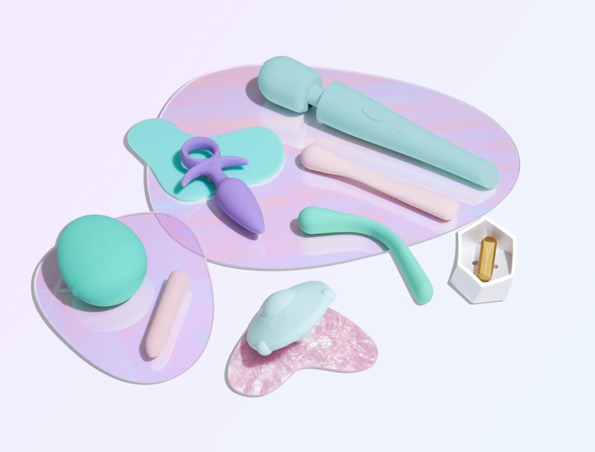

El mercado de los juguetes sexuales constituye un espacio en el que se materializan los gender scripts mediante lo que Shelly Ronen denomina como gendered morality. En su análisis Ronen evidencia que la industria no solo divido productos por género, sino que también le asigna distintos valores morales al consumo de estos aparatos (Ronen, 2020)
En cuanto a los juguetes sexuales dirigidos al público femenino, han sido resignificados a lo largo de la historia como herramientas de empoderamiento, autocuidado y bienestar, lo que le permite ser parte de discursos contemporáneos de sexualidad positiva. Ahora bien, por otro lado, el consumo de este tipo de juguetes por parte de hombres suele ser representado de manera ambivalente e incluso estigmatizado, lo que permite evidenciar una jerarquización moral del placer según el género (Ronen, 2020)

Esto implica que el mercado no solo vende productos, sino que regula simbólicamente qué formas de sexualidad son aceptables. De esta manera, los juguetes sexuales funcionan como tecnologías que reproducen normas sociales sobre el cuerpo, el deseo y el placer.
Al realizar un análisis de reseñas de productos en plataformas digitales encargadas de la comercialización de estos artículos permite evidenciar que las personas interpretan y evalúan los juguetes sexuales en función de representaciones diferenciadas del cuerpo. En estos discursos, los dispositivos dirigidos a mujeres suelen centrarse en la estimulación del clítoris bajo el sustento de la importancia del autoconocimiento y experiencias relacionadas, mientras que los dirigidos a los hombres se enfocan en la penetración, la simulación corporal y la intensidad (Döring, 2022)

Esto sustenta la idea que los juguetes sexuales no son tecnologías neutras, sino artículos que incorporan y reproducen discursos culturales sobre cómo debería experimentarse el placer según el género. De esta manera, participan en un proceso de gendered technology, en el cual, el diseño, la comercialización y el uso están estructurados por normas de género.
Pese a esta fuerte posición de género, algunos cambios en el mercado plantean la posibilidad de una transición hacia formas de de- gendering technology. La resignificación de ciertos dispositivos como herramientas de autonomía sexual femenina abre espacios de reflexión ante los discursos tradicionales (Ronen, 2020)
No obstante, estos procesos resultan limitados, ya que el mercado continúa con estas categorías binarias. Por ello, los juguetes sexuales se ubican en una posición ambivalente, de manera simultánea reproducen estructuras de género y ofrecen posibilidades de resignificación.